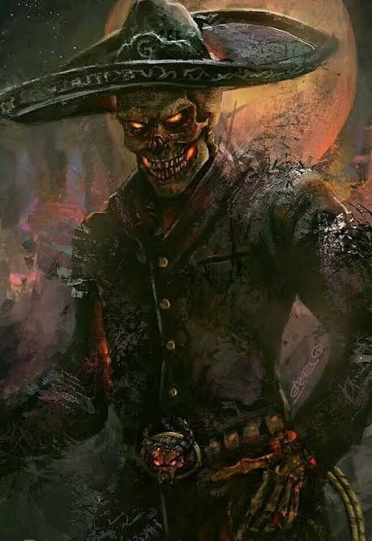

UNA LEYENDA MEXICANA
EL CHARRO
NEGRO
«Cuando escuches su silbido...
ya será demasiado tarde.»
EL TRATO
HE VENIDO
POR TU ALMA...
Te ofrezco riquezas que jamás imaginaste. Pero a cambio... me entregarás lo más valioso que posees.
¿ACEPTAS EL TRATO?

¡TU ALMA ES MÍA!